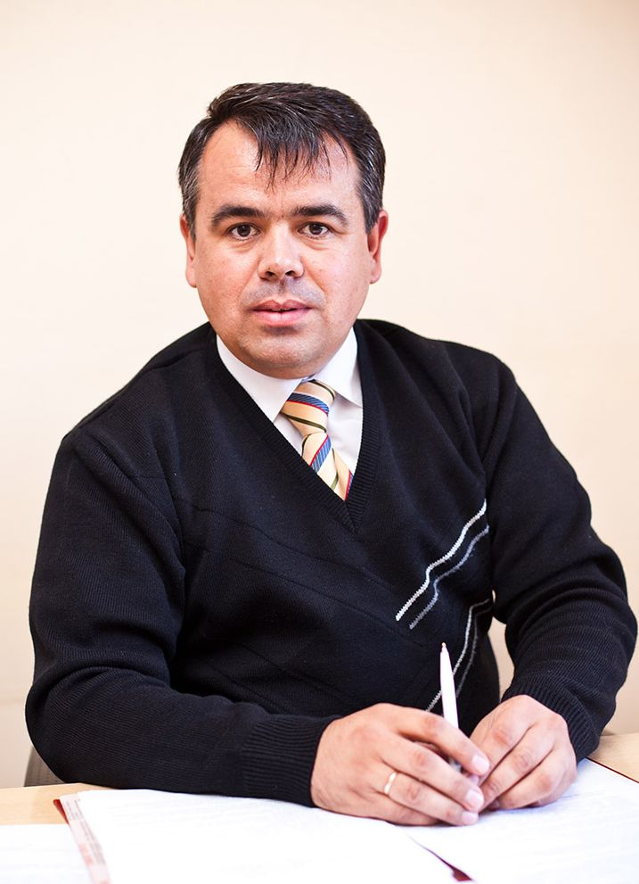

Брошюра «В помощь первокурснику» — студенческий медиапроект по дисциплине «Проектная деятельность», направленный на помощь новым студентам в адаптации к университетской жизни.
Переход от школы к университету сопровождается стрессом из-за новой образовательной среды. При этом ключевая информация часто подаётся разрозненно, что мешает студентам быстро находить нужные сведения.
Брошюра «В помощь первокурснику» решает эту проблему: она собирает все важные данные и ссылки в едином ресурсе. Такой подход снижает тревожность, ускоряет адаптацию и помогает предотвратить академическую неуспеваемость.
Брошюра вручается студентам во время прохождения Адаптивных курсов — то есть в самый нужный момент, когда первокурсник ещё только начинает знакомство с вузом.
Проект реализован в рамках учебной дисциплины «Проектная деятельность» Московского Политехнического Университета под руководством доцента Вакку Григория Владиславовича.
| Формат | А5 |
| Полос | 8 |
| Скрепление | 2 скобы |
| Бумага | Офисная, 80 г/м² |
| Печать | Цветная |
| Версии | Печатная + Электронная |
Издание бумажной версии брошюры «В помощь первокурснику» для обеспечения быстрой адаптации первокурсников в вузе, а также подготовка её электронного формата для размещения на сайте университета.
Проект прошёл несколько ключевых этапов от идеи до готового продукта.
Распределение ролей: редакторы, дизайнеры, копирайтеры, фотографы, верстальщики. Знакомство с задачами.
Изучение брошюр других вузов (Москва, СПб), анализ корпоративного стиля Московского Политеха.
Каждый редактор и копирайтер отвечал за свои рубрики: искал информацию на официальном сайте и в соцсетях вуза.
Разработка цветовой палитры (бордовый, жёлтый, серый), создание макета в Adobe Illustrator и Photoshop.
Разработка веб-сайта брошюры: вёрстка разделов, анимации, адаптивный дизайн, публикация на Vercel.
Корректура, стилистическая правка, подготовка отчётов, защита проекта.

Доцент · Куратор проекта «В помощь первокурснику»
Под руководством Григория Владиславовича студенты из разных учебных групп (241 и 251 серии) объединились для создания практического медиапродукта. Куратор координировал работу команды, утверждал концепцию и направлял студентов на каждом этапе реализации проекта.